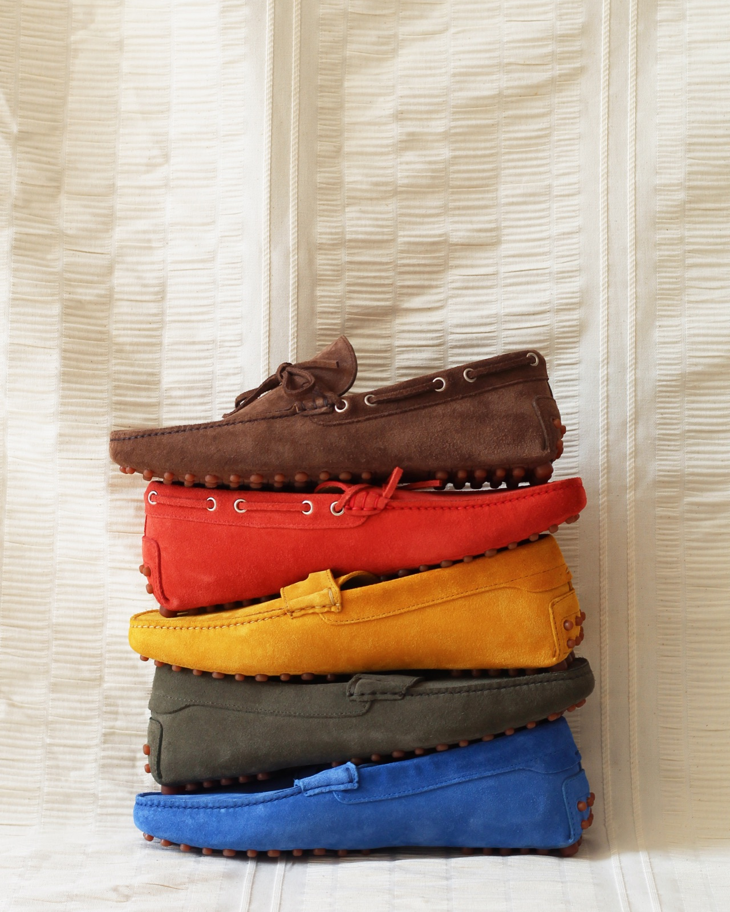
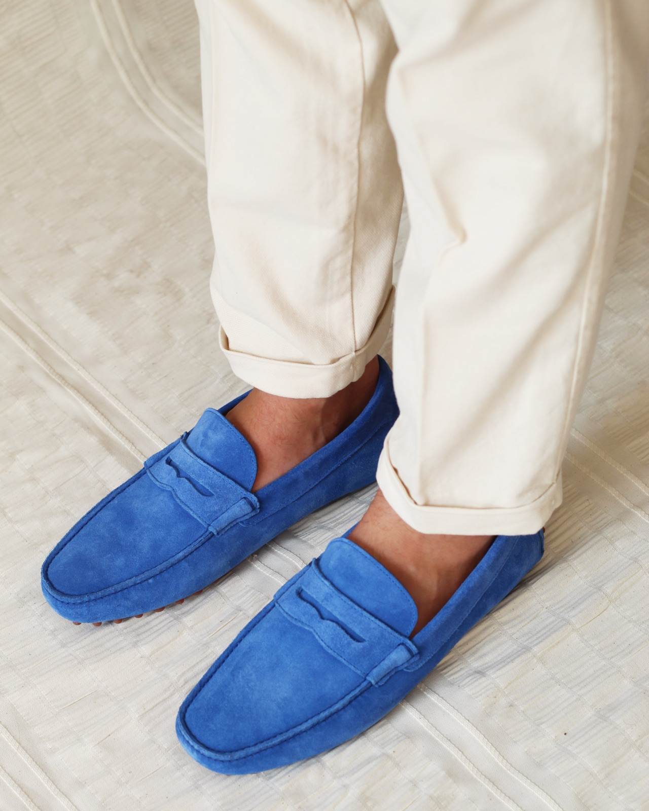
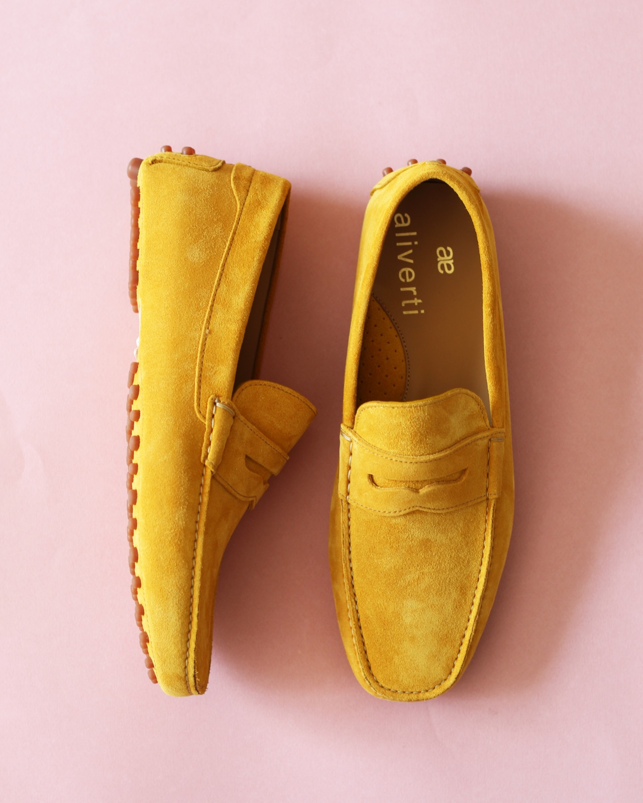
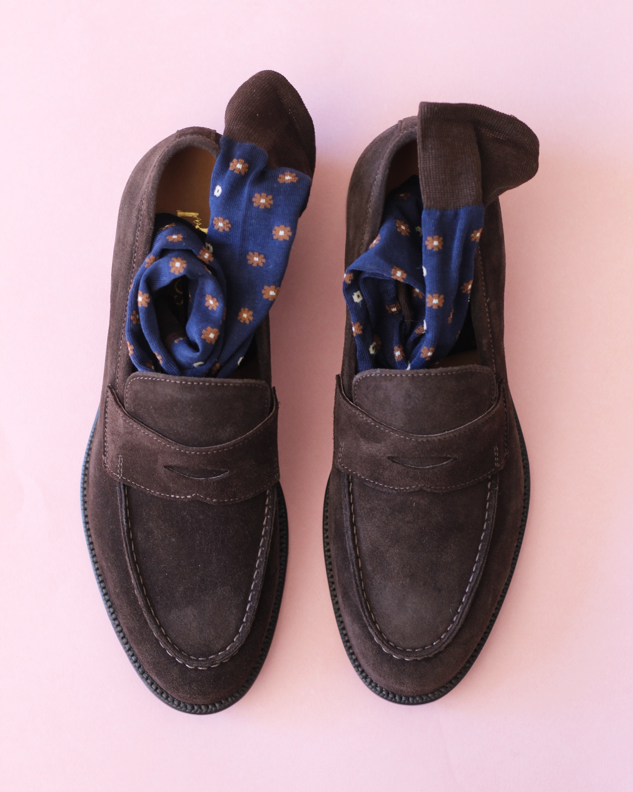
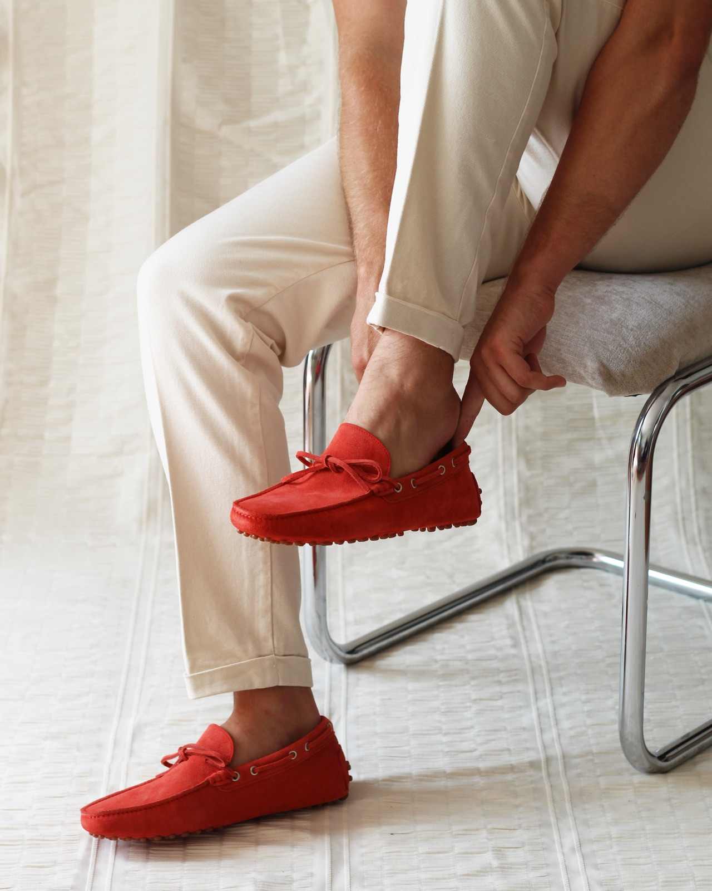

Driver Collection
Handmade Italian leather drivers for Aliverti, shot to celebrate colour, texture, and detail. Rich suede in every shade, captured up close to let the craft speak for itself.
Our audience has historically responded well to catalogue-style content, so we stayed with a format we know converts, but pushed it somewhere more visually considered. So much of a driver's appeal sits in its texture and colour, neither of which reads in a standard product shot, so we worked almost entirely in close-up: letting the suede, the stitching, and the depth of each shade carry. Showing the range in full was deliberate too, inviting customers to find their colour. The result keeps the clarity of a catalogue while feeling far more premium.




